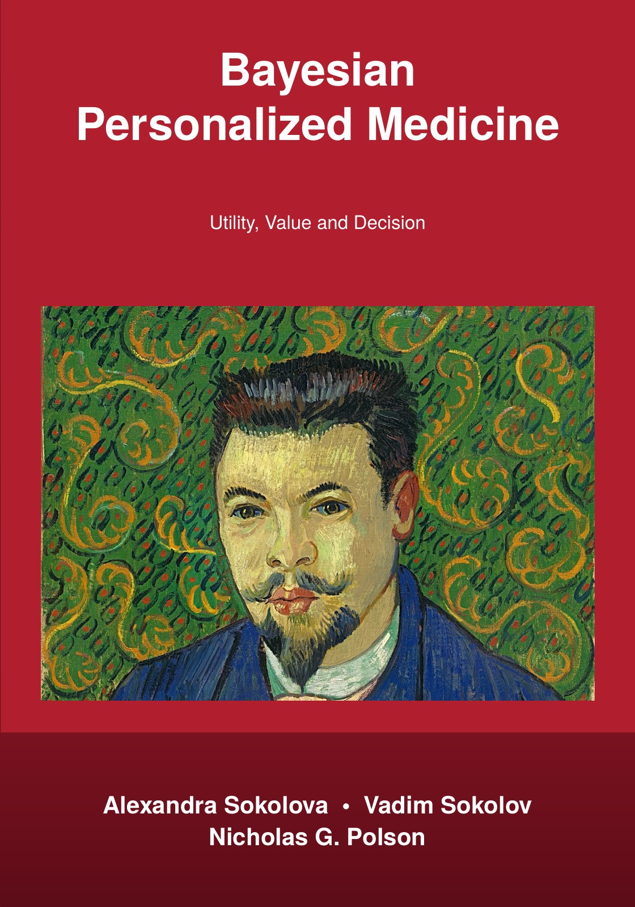

Bayesian Personalized Medicine Utility, Value and Decision
By Alexandra Sokolova, Vadim Sokolov and Nicholas G. Polson.


Description
This book applies Bayesian decision theory to the treatment of one patient and to the decisions of the health systems, sponsors and regulators that pay for and license treatments. It is the companion to Bayesian Clinical Trials, which covers the design and monitoring of trials; this book takes the trial’s evidence to the decisions it should inform.
The first part is about decisions for one patient. It sets out expected utility and quality adjusted life years, then follows a real case of localized prostate cancer: a patient who computed his own expected utility from the published nomograms and reached a different choice from his physicians. We show that a physician who reasons from the most likely disease state and a patient who reasons from the whole posterior can disagree, give a lower bound on the gap, and build priors that carry a nomogram’s stated calibration into the decision. Later chapters derive a square root law for screening intervals, set out causal effects as accounting identities computed from one posterior, estimate heterogeneous treatment effects, and estimate disease prevalence and test accuracy when no gold standard exists.
The second part is about value. It prices a drug development program, computes the expected value of sample information for a trial and shows that the optimal trial size grows with the square root of the population that will be treated, argues that regulators should register the sponsor’s prior rather than restrict its analysis plan, models several sponsors exploring the same target as a problem of shared information, and closes with computation and the use of AI agents in trial work.
Every number comes from short R code shown with the text or from scripts that accompany the book.
How to cite
Sokolova, Sokolov and Polson (2026), Bayesian Personalized Medicine: Utility, Value and Decision, edition 1, https://doi.org/10.5281/zenodo.24562216.
@book{sokolovasokolovpolson2026bayesian_personalized_medicine,
author = {Sokolova, Alexandra and Sokolov, Vadim and Polson, Nicholas G.},
title = {{Bayesian Personalized Medicine: Utility, Value and Decision}},
year = {2026},
publisher = {Independently published},
doi = {10.5281/zenodo.24562216},
url = {https://vsokolov.org/books/bayesian_personalized_medicine/}
}Main results
- Severity monotone divergence of the Bayes and MAP actions (Proposition 3.1, page 26): When the advantage of aggressive treatment grows with severity and the posterior has no mass below its mode, some Bayes action is at least as aggressive as the action chosen at the modal state.
- Wedge lower bound for the Bayes advantage of aggressive treatment (Proposition 3.2, page 26): A closed form bound in the posterior tail mass and the cost ratio gives a sufficient condition under which the Bayes rule prefers the aggressive action even when the modal rule prefers the conservative one.
- Undervaluation of posterior yielding actions by direct utility (Proposition 3.3, page 28): An action that leaves an informative posterior has a sequential value at least as large as an action that preserves the prior and removes later options, even when their direct utilities are equal, and the gap is zero only if one later action is optimal under every posterior the first action can leave.
- Enforcement substitutes for restriction of the permitted analysis set (Proposition 12.1, page 122): A cheaper audit technology or a higher maximum penalty optimally lets the regulator permit a larger set of sponsor analyses instead of a smaller one, when the deviation gain rises with the richness of the analysis set.
- Phase II specificity and cost per approved drug (Proposition 13.1, page 135): Treating Phase II as a diagnostic test, specificity lowers the cost per approved drug more than the same gain in sensitivity under a stated condition on costs and accuracy.
All 7 results of the book (7 proved) are on the page Results by chapter, each with its statement, status and number.
License: Text, figures and PDF: CC BY 4.0. Code: MIT.
This page is generated from the book’s repository (main). The numbers and pages are those of the PDF, version 1.0.0.